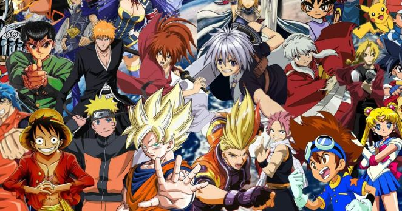

Anime is hand-drawn and computer animation originating from Japan. In Japan and in Japanese, anime (a term derived from the English word animation) describes all animated works, regardless of style or origin. However, outside of Japan and in English, anime is colloquial for Japanese animation and refers specifically to animation produced in Japan Animation produced outside of Japan with similar style to Japanese animation is referred to as anime-influenced animation.
Bungou Stray Dog is my favourite anime all the time. The story focuses on a young adult named Atsushi Nakajima. After being kicked out of his orphanage, Atsushi accidentally stops the suicide of a detective named Osamu Dazai believing he was drowning in the river. During his interactions with Dazai, Atsushi learns he is gifted with a supernatural ability capable of transforming him into a berserker white tiger in the moonlight; this made the orphanage torture him and kick him out in the past. Dazai recruits him into the Agency and there he meets many other ability users as they tackle various cases and events taking place within the city of Yokohama, a place teeming with individuals with Supernatural Abilities. Atsushi becomes the target of the Port Mafia members, most notably Dazai's former student, Ryūnosuke Akutagawa, as there is a bounty on his head on the black market.
This is my favourite anime opening song. This song name is "Inferno" perform by a band named Mrs. Green Apple. I discovered this song from an anime called "Fire Force". This has been stucked in my head since the first time I heard it.